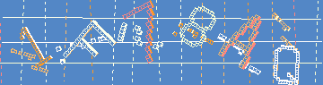
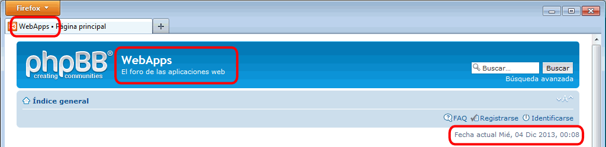
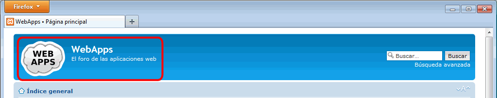
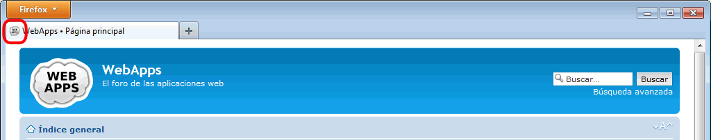
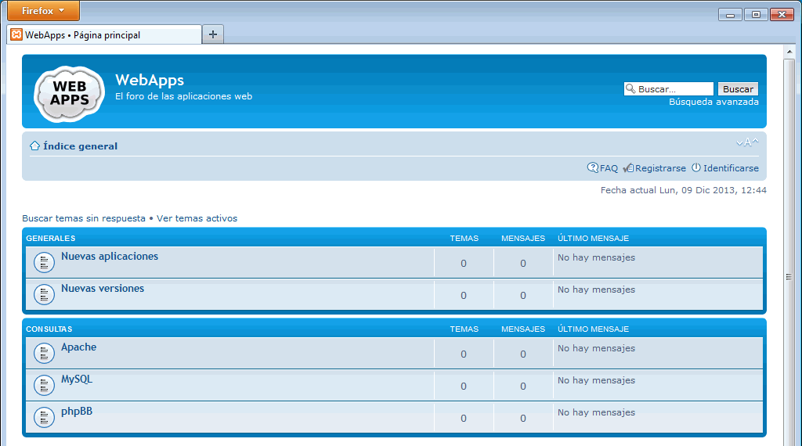

Estos ejercicios corresponden a una versión antigua de phpBB. No están actualizados a versiones más actuales porque desde el curso 2014/15 no estoy trabajando en clase phpBB ya que estoy dedicando más tiempo a otras aplicaciones. He mantenido estos ejercicios en los apuntes por si le pueden servir a alguien.
En esta lección se proponen ejercicios para conocer y utilizar phpBB. Se pueden consultar las soluciones de estos ejercicios de phpBB, aunque se recomienda intentar realizarlos primero sin recurrir a estas soluciones.
phpBB (2) A1 - Acceder desde otros ordenadores
Intentar acceder al foro desde otras otras máquinas (desde otros ordenadores pertenecientes a la misma red o desde una máquina virtual en el mismo ordenador) incluyendo en la dirección la IP del servidor (es decir, en vez de http://localhost/NombreAlumno/iaw/aplicaciones/phpBB/, escribiendo http://AAA.BBB.CCC.DDD/NombreAlumno/iaw/aplicaciones/phpBB/, siendo AAA.BBB.CCC.DDD la IP del propio ordenador).
Crear un alias para que los visitantes puedan acceder escribiendo http://AAA.BBB.CCC.DDD/phpBB/
phpBB (2) A2 - Avatares
En este ejercicio se trata de configurar phpBB para que los usuarios puedan incluir avatares en su mensajes.
Los avatares son imágenes de tamaño reducido que se muestran junto al nombre del usuario, para facilitar la identificación de la autoría de los mensajes.
phpBB permite tres tipos de avatares:
local: el administrador define los avatares a disposición de los usuarios. Los avatares están organizados en galerías de avatares.
upload: cada usuario puede subir su propio avatar (el administrador define el tamaño máximo en píxeles y en KB).
remote: el avatar puede ser una imagen situada en cualquier servidor (en este caso no hay tamaño máximo de avatar).
Entrar en phpBB como administrador admin y habilitar los avatares y la galería de avatares.
Elegir un avatar para el administrador
Comprobar que en los mensajes del foro del administrador se muestra el avatar elegido.
Galería de avatares (local) (2)
Crear una galería de avatares de media docena de dibujos, obtenidos por ejemplo de esta colección de dibujos de la Open Clip Art Library: https://openclipart.org/search/?query=baddie. Descargarlos en formato PNG y con un tamaño de 64 píxeles.
Copiar los dibujos en la carpeta adecuada.
Entrar en phpBB como usuario usuario_1 y elegir uno de los nuevos avatares.
Comprobar que en los mensajes del usuario se muestra el avatar elegido.
phpBB (2) A3 - Captcha
Para asegurarse de que los formularios de los sitios web han sido rellenados por humanos y no por programas diseñados para ello (para posteriormente inundar el sitio web de propaganda o boicotear el sitio), se diseñaron los captcha. Se trata de pequeños acertijos (reconocimiento de letras y números, preguntas triviales, etc.) que presuntamente los ordenadores no pueden resolver.
phpBB plantea un captcha al inscribir un nuevo usuario. El captcha predeterminado de phpBB se llama "imagen GD" y consiste en reconocer media docena de letras y números en una imagen como la siguiente:

Descargar el captcha Sortables
Instalarlo y configurarlo para que funcione.
phpBB (2) B1 - Foro completo
Cree una nueva instalación de phpBB cuyo tema sean las Aplicaciones Web.
phpBB (2) B2 - Cambiar la descripción del foro
Cambie el nombre y la descripción del foro

phpBB (2) B3 - Cambiar el logotipo del foro
Cambie el logotipo del foro, utilizando esta imagen:

phpBB (2) B4 - Asignar un favicon al foro
Asigne un favicon al foro, utilizando esta imagen:

phpBB (2) B5 - Creación de foros
Cree la siguiente estructura de foros:
Categoría Generales
Foro Nuevas aplicaciones: para informar de nuevas aplicaciones web
Foro Nuevas versiones: para informar de la aparición de nuevas versiones
Categoría Consultas
Apache: para preguntas y respuestas sobre el servidor Apache
MySQL: para preguntas y respuestas sobre el servidor de bases de datos MySQL
phpBB: para preguntas y respuestas sobre phpBB
Ejemplo de foro:

phpBB (2) B6 - Creación de usuarios
Cree un usuario en cada uno de estos grupos:
admin_1: grupo Administradores
moderador_1: grupo Moderadores globales
usuario_1: grupo Usuarios registrado
phpBB (2) C (optativo) - Migración a MyBB
MyBB es un foro cuya popularidad está aumentando últimamente.
Instalar MyBB.
Migrar el foro de phpBB del ejercicio anterior a MyBB.